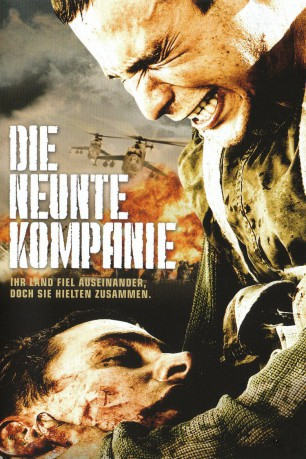

#2077 Die Neunte Kompanie
Alternativ: 9th Company (Englischer Titel)
 
 IMDB-Wertung: 7.1 / 10
IMDB-Wertung: 7.1 / 10  Metascore: 0
Metascore: 0 
In Afghanistan tobt 1989 seit bereits 10 Jahren der Krieg zwischen den Russen und den Mudschaheddin. Die Neunte Kompanie, größtenteils aus ganz frischen und jungen Rekruten, wird zur Sicherung des nicht mehr zu verhindernen Rückzugs auf eine dafür entscheidene Anhöhe gesendet. Dort sieht sich die unerfahrene Einheit aus Freiwilligen bald einer zahlenmäßig weit überlegenen und hoch motivierten Muschaheddin-Armee gegenüber. Ein gnadenloser Kampf entbrennt...
Jahr: 2005
Dauer: 139 Minuten
FSK: 16
Land: Finnland Studio: Kinowelt Home EntertainmentTonspuren:
Untertitel:
Auflösung: 1080p (1920x768) Größe: 11776 MB
Genre: Action, Drama, Krieg, Geschichte
Regisseur: Fedor Bondarchuk
Drehbuch: Iskander Galiev, Yuriy Korotkov
Soundtrack: Dato Evgenidze
Darsteller:
- Konstantin Kryukov als Dzhokonda
- Fedor Bondarchuk als Khokhol
- Mikhail Efremov als Dembel
- Aleksey Serebryakov als Kapitan-razvedchik
- Artur Smolyaninov als Lyutyy
- Aleksey Chadov als Vorobey
- Ivan Kokorin als Chugun
- Mikhail Evlanov als Ryaba
- Artyom Mikhalkov als Stas
- Soslan Fidarov als Pinochet
- Ivan Nikolaev als Seryy
- Mikhail Porechenkov als Dygalo
- Dmitriy Mukhamadeev als Afanasiy
- Irina Rakhmanova als Belosnezhka
- Amadu Mamadakov als Kurbashi
- Aleksandr Sheyn als Patefon
- Aleksey Kravchenko als Kapitan Bystrov
- Aleksandr Bashirov als Pomidor
- Stanislav Govorukhin als Kompolka v uchebke
- Andrey Krasko als Kompolka v Afgane
- Aleksandr Lykov als Mayor-vzryvnik
- Oles Katsion als Mikhey
- Karen Martirosyan als Ashot
- Marat Gudiev als Akhmet
- Denis Moshkin als 'Chernyy aist'
- Aleksandr Kucherenko als Parikmakher
- Svetlana Ivanova als Olya
- Evgeniy Arutyunyan als Svyazist
- Mikhail Vladimirov als Voditel-mekhanik tanka
- Oleg Zhukov als
- Mikhail Solodko als Ofitser voenkomata
- Evgeniya Popova als
- Ruslan Khabibullov als Soldat , uncredited
- Igor Salimonov als Tankist , uncredited
- Viktor Serdyuk als Soldat , uncredited
- Dmitriy Sharakois als Prizyvnik , uncredited
Datei: X:\2005(N-Z)\Neunte Kompanie, Die (2005, FSK16, 1920x768).mkv seit 30.09.2015
Festplatte: HD 2005(G-Z)-2006(A-Z)
 Es gibt insgesamt 50 Filme in der Gruppe '2005(N-Z)'
Es gibt insgesamt 50 Filme in der Gruppe '2005(N-Z)'